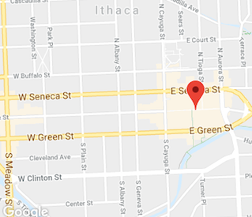

FAQs
Where is the festival?
It's in the Ithaca Commons!
 Photo Source
When is the festival?
The festival runs for three fun filled days.
Friday, September 28
12:00pm - 6:00pm
Saturday, September 29
10:00am – 6:00pm
Sunday, September 30
10:00am – 6:00pm
How do I get to the festival from Cornell?
The most efficient and free way to get to the festival is to take the TCAT. North and West Campus residents can take either Route 70 or Route 72 to attend the festival. It’s free for freshman to take the bus everyday. Sophomores, Juniors, and Seniors are able to take the bus for free all day on weekends.
Do the vendors and farmers accept credit?
Not all vendors and farmers accept credit. All of the vendors and farmers, though, do accept cash. If you are low on cash your best bet is to go to an ATM before heading over to the festival. The Tompkins Trust Company does have an ATM inside of the Cornell Store. But, if you want to go to your specific bank here is a link provided by Cornell of all the ATM locations of banks around campus and in Ithaca.
What’s the cost to attend the festival?
The festival is completely free to attend!
Are pets allowed?
Yes! Ithaca loves its furry friends! Dogs attended by an owner and on a leash are allowed at the festival.
How many people attend the festival each year?
Ithaca is proud to say that 35,000 people attend the festival each year! It’s not only people from Cornell and the Ithaca community who attend. Rather, people from the around the Finger Lakes and New York state make the point to come to our celebration of apples!